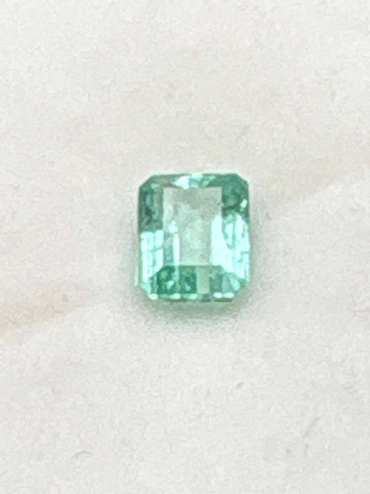

The Gem Drawer › No. 46

A pale green 7.5 x 5.5 mm step cut with the fine inclusions typical of emerald.
| Catalogue no. | #46 |
|---|---|
| As labeled | Emerald (AS LABELED - pale color, recommend lab verification for authenticity/treatment before pricing, see notes) |
| Shape / cut | Emerald cut (rectangular step cut) |
| Weight | 1.15 ct |
| Measurements | 7.5 x 5.5mm |
| Colour | Pale green |
| Clarity / condition | Small visible inclusions ("jardin") typical of natural emerald; not professionally graded |
Interested in this stone, or in the collection as a whole? Terry VanWormer can answer questions about it.
Click here to inquireor email Terry directly at maxrebo34@gmail.com